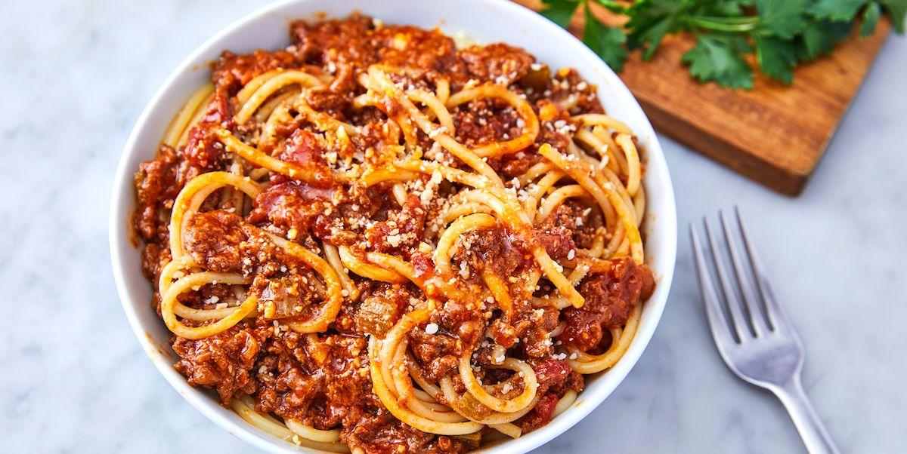

Simple Spaghetti Bolognaise

Ingredients
- 500g beef mince
- 1 tbsp olive oil
- 1 onion, finely chopped
- 1 cup beef stock
- clove of garlic
- Carrots, mushroom and celery (optional)
- 1 tsp dried mixed or Italian-style herbs
- Squirt of tomato paste
- 1x 425g passatta or chopped tomatoes
Method
- Heat oil in a heavy based on and add onion, stirring over a moderate heat for 1-2 minutes.
- Add mince, stirring constantly until well browned.
- Stir in remaining ingredients.
- Cover and simmer gently for about 30 minutes, or until cooked through (if using chopped tomatoes this will take a bit longer.)
Serve with your favourite spaghetti, bread and salad.